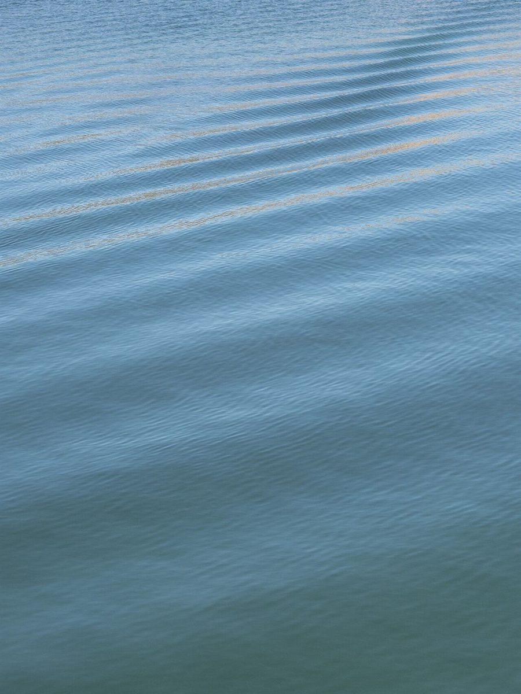
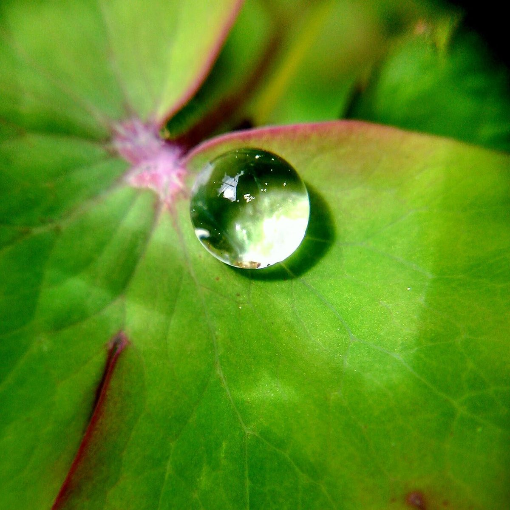
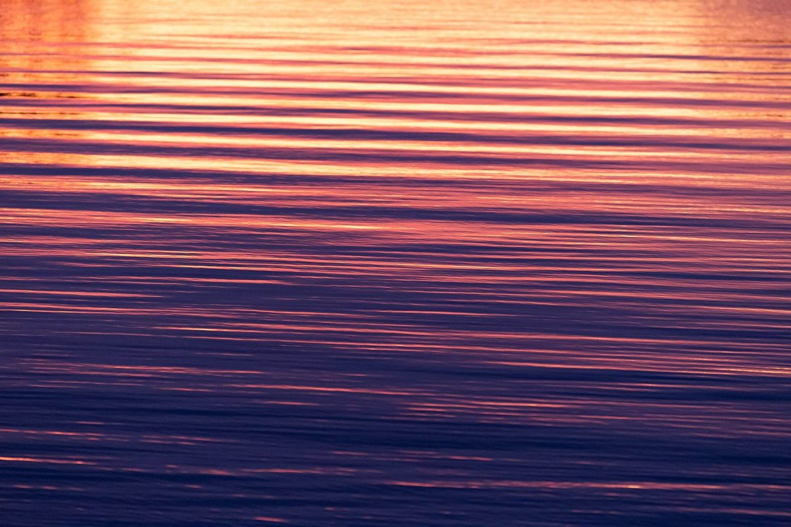
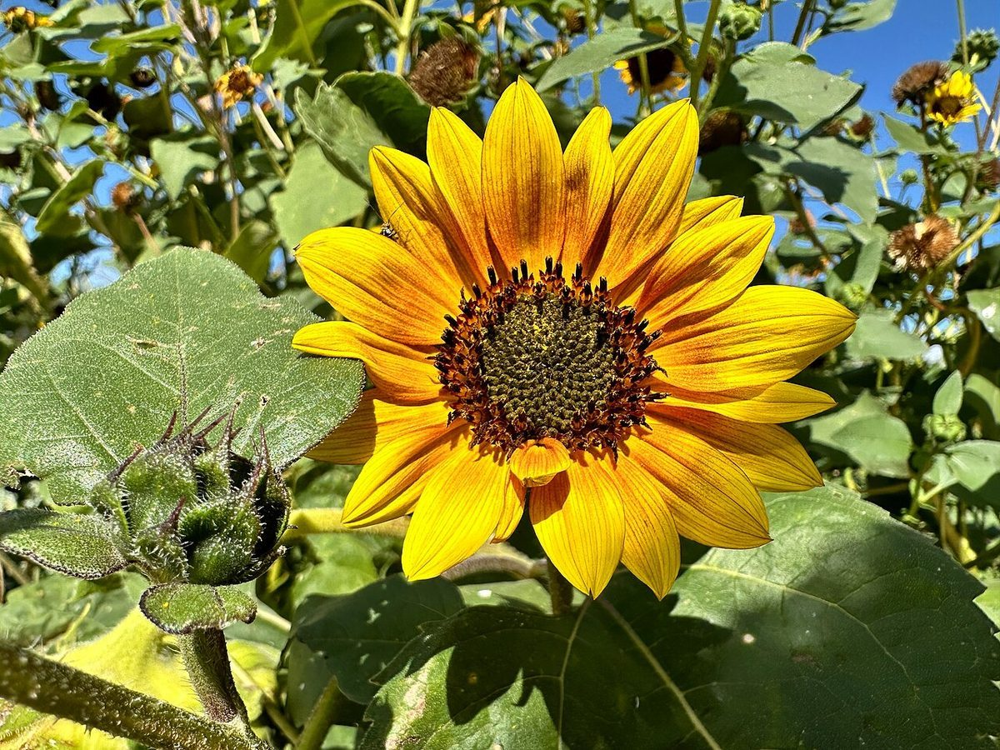

カフェ(コーヒー) / 三重県名張市
aquacoffeeapis
三重県名張市中知山にあるカフェ「aqua apis coffee」のご案内ページです。営業時間やメニューなど、詳しいことは準備中。まずはInstagramをのぞいてみてください。

制作側の連想
水のうえに、蜜が沈むまで
店名の由来は分かりません。制作側は「aqua」と「apis」という響きから、水と蜜蜂を連想しました。そこでこのページは、水と蜂蜜の「比重」の目盛りに見立て、ページが進むほど水色から蜂蜜色へ色が変わる作りにしています。お店の理念・由来とは無関係の、制作側の連想です。
1.00 → 1.20
水の層(イメージ)
写真はお店や名張市の風景ではありません。国外・撮影地不明のフリー素材です。



1.20 → 1.40
蜜の層(イメージ)
店で扱っているものを示す写真ではありません。花の写真は色合わせのためのイメージです。



ご案内
お店のこと(確認できたものだけ)
| 所在地 | 〒518-0442 三重県名張市中知山469番地2 |
|---|---|
| 電話 | なし |
| 営業時間 | 準備中 |
| 定休日 | 準備中 |
| ご予約 | 準備中 |
| 駐車場 | 準備中 |
| SNS | Instagram @aquaapiscoff |